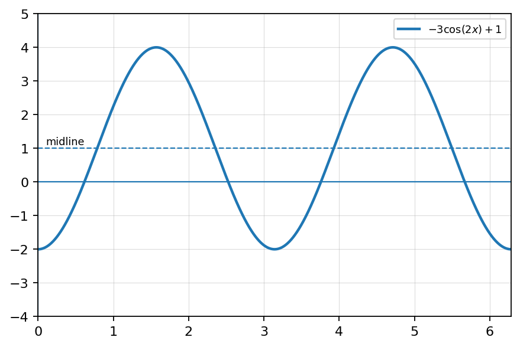
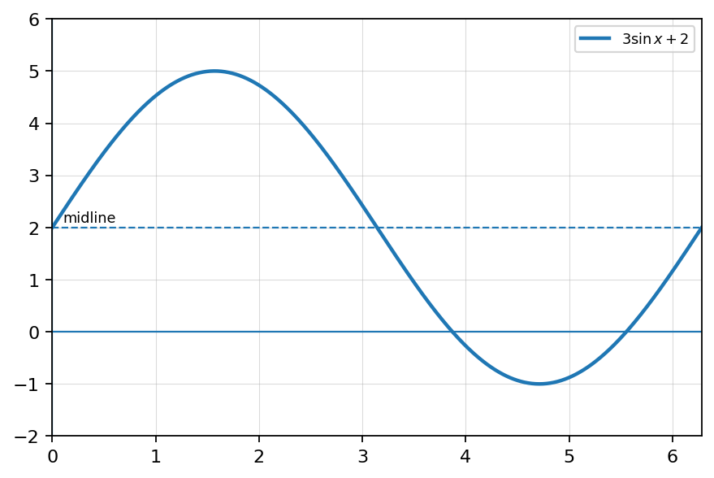
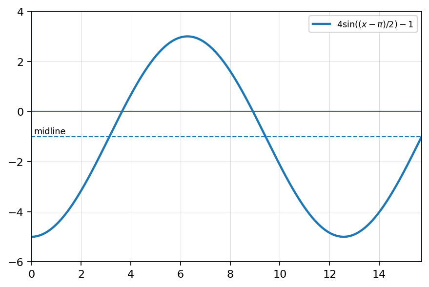
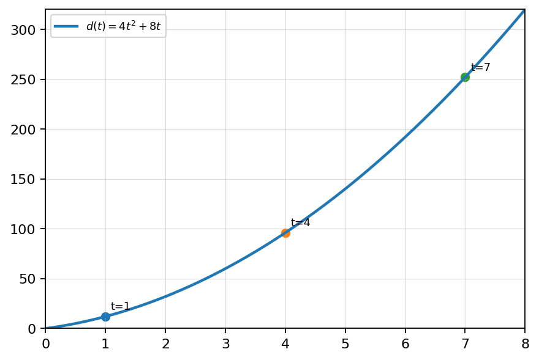
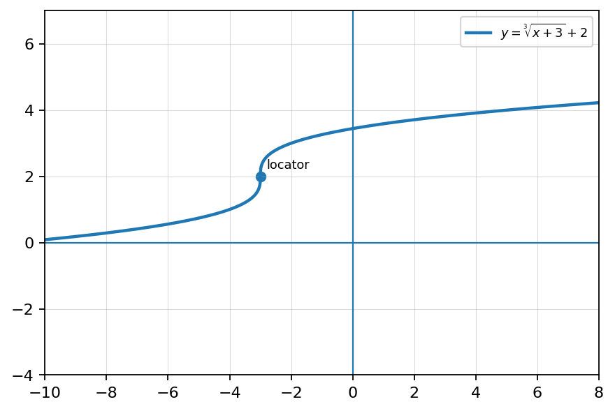
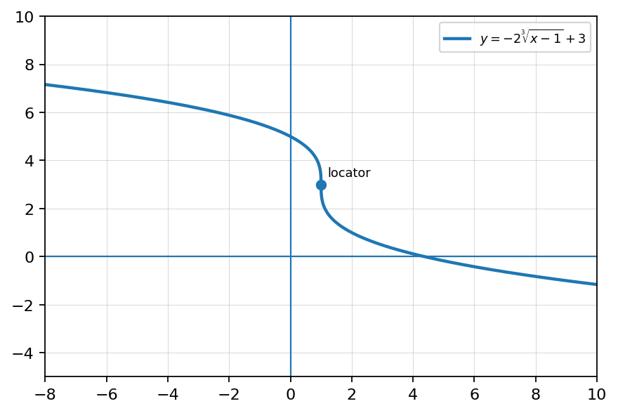
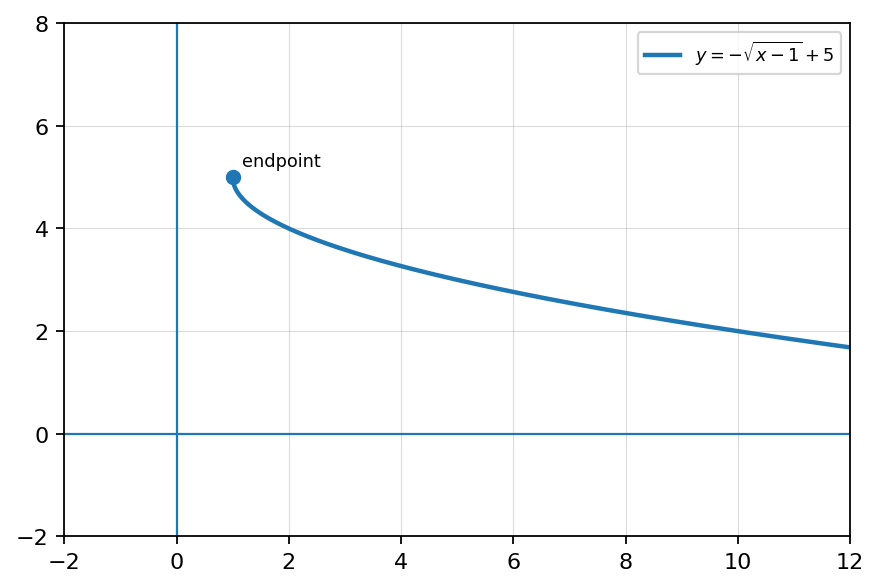

State whether the following functions have the same amplitude, same period, both, or neither.
Given the trig graph, write a possible equation in cosine form. Then explain how the graph shows the amplitude, period, shift, and reflection.

Given the graph, write one sine equation and one cosine equation that model the graph. Justify why both equations produce the same curve.

Create a multi-representation problem using the graph shown. Include the equation \(y=4\sin\left(\frac12(x-\pi)\right)-1\), a table of key values, and the graph. Require students to determine amplitude, period, phase shift, vertical shift, maxima/minima, and explain how the table and graph agree.

Let \(f(x)=4\). Find and simplify the difference quotient.
Fill in the blanks.
Let \(f(x)=-x^2+6x\). Find and simplify the difference quotient.
Let \(f(x)=x^3\).
Let \(f(x)=x^2+3x\).
A cyclist’s distance is modeled by \(d(t)=4t^2+8t\).

Let \(f(x)=x^3-2x\).
Create a function \(f\) so that the simplified difference quotient is \(2x+h+5\).
For \(f(x)=\sqrt{x-2}+3\), state the starting point/locator point.
Given a graph of a cube root function, identify the locator point, domain, range, and intercepts.

Given a graph of a cube root function, write an equation and justify how each transformation appears in the graph.

Create a multi-representation problem involving an equation, a graph, and a table where students analyze a radical function’s domain, range, locator point, intercepts, and intervals of increase or decrease.
